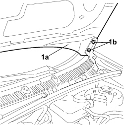

7210E20 R.R. BONNET
- Path
- Procedures > 72 PANELS AND FRAMES > 7210 REMOVING-REFITTING > 7210E EXTERNAL PARTS > 7210E20 R.R. BONNET
- Kind
- repair procedure (removal / refitting; the operation number is the code)
- Applies to
- all engines; all production periods
- Interactive page
- https://sloeber94.github.io/elrnDB-fCrm/en/#/194001242
Applies to: all engines; all production periods
 Removing
Removing
 Refitting
RefittingOpen the bonnet.
1. Support the bonnet lid (1a) and unscrew bolts (1b) securing the hinges on both sides. Lastly, remove the bonnet lid.

Applies to: all engines; all production periods
Refitting
Removing- Check that the bonnet lid and the hinges are not damaged.
- Position the bonnet lid.
- Screw in the bolts for the hinges without tightening them.